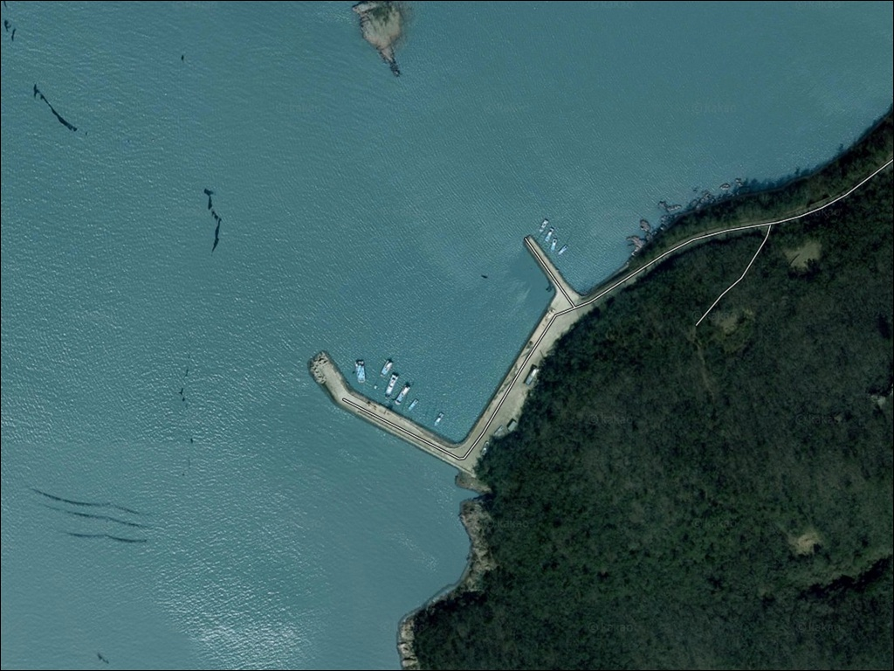
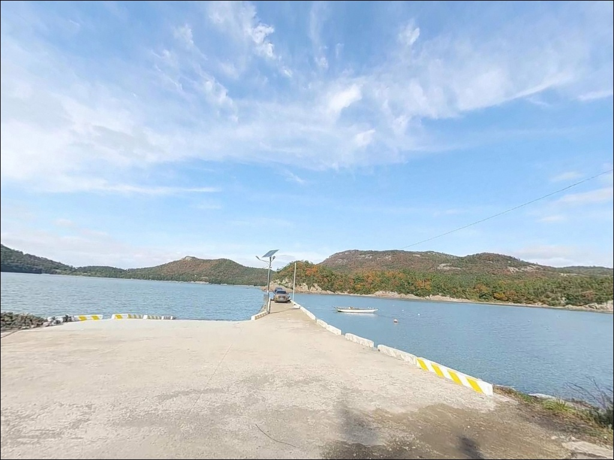
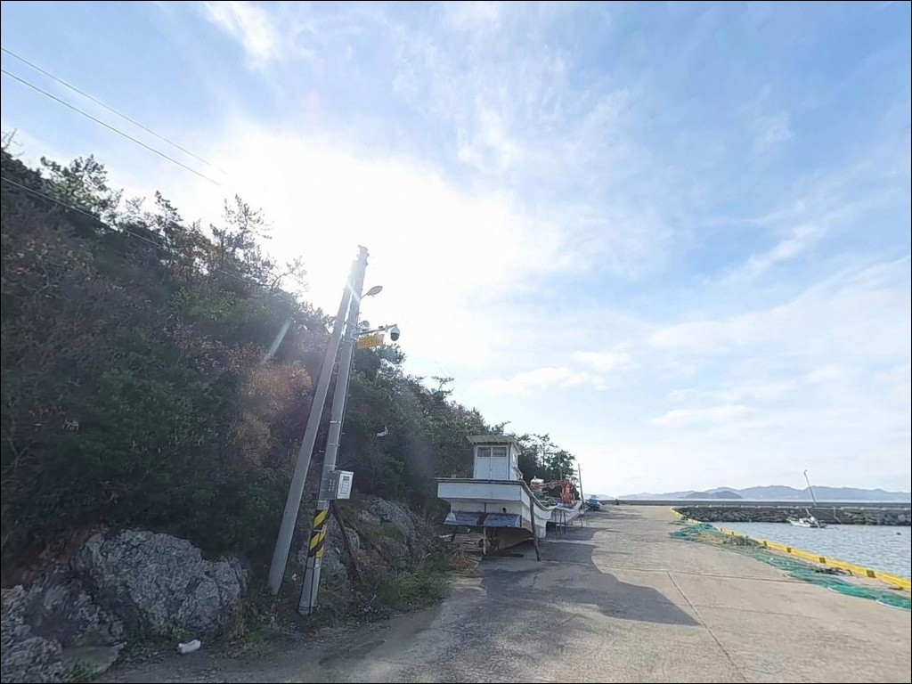
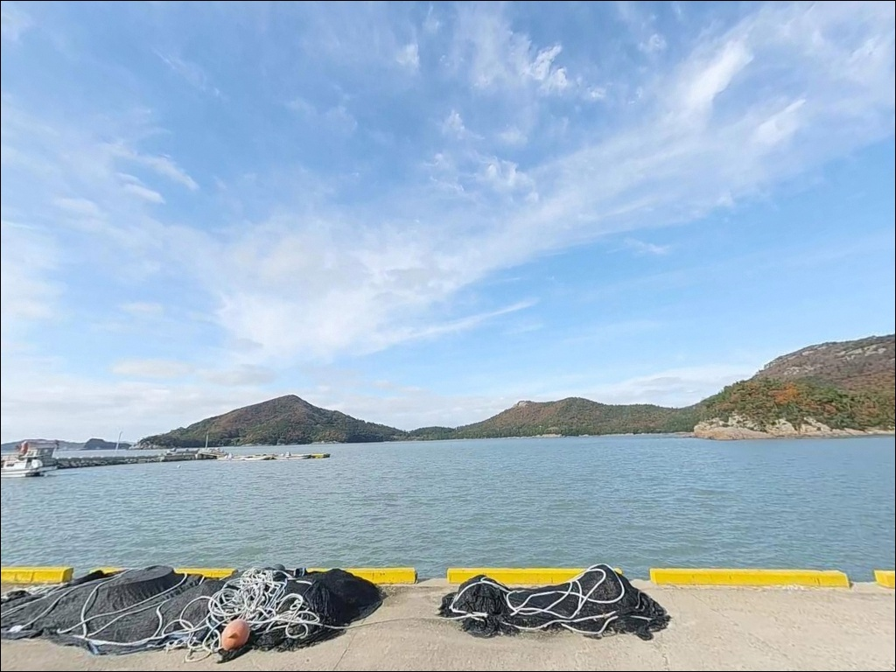
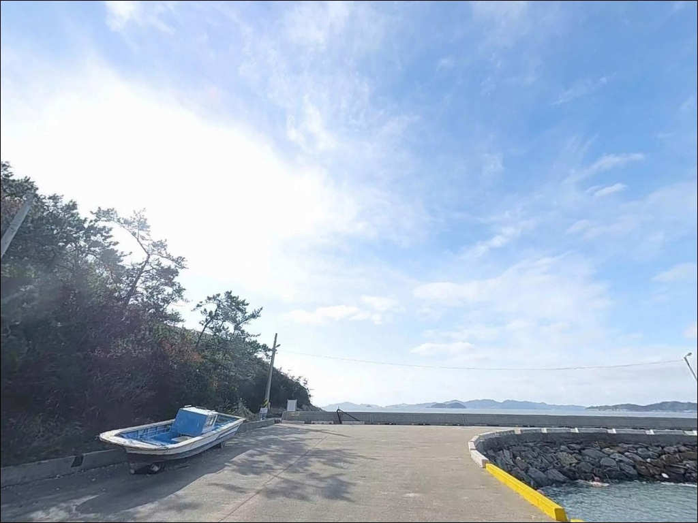
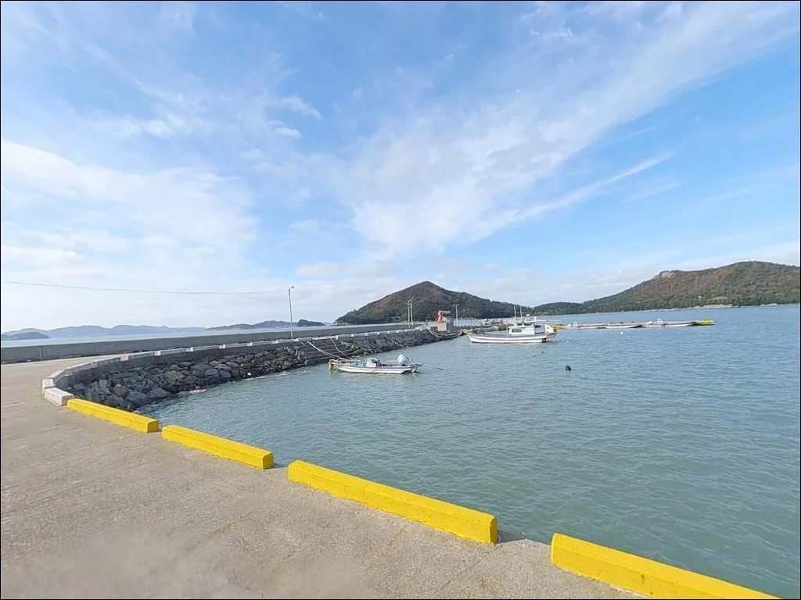
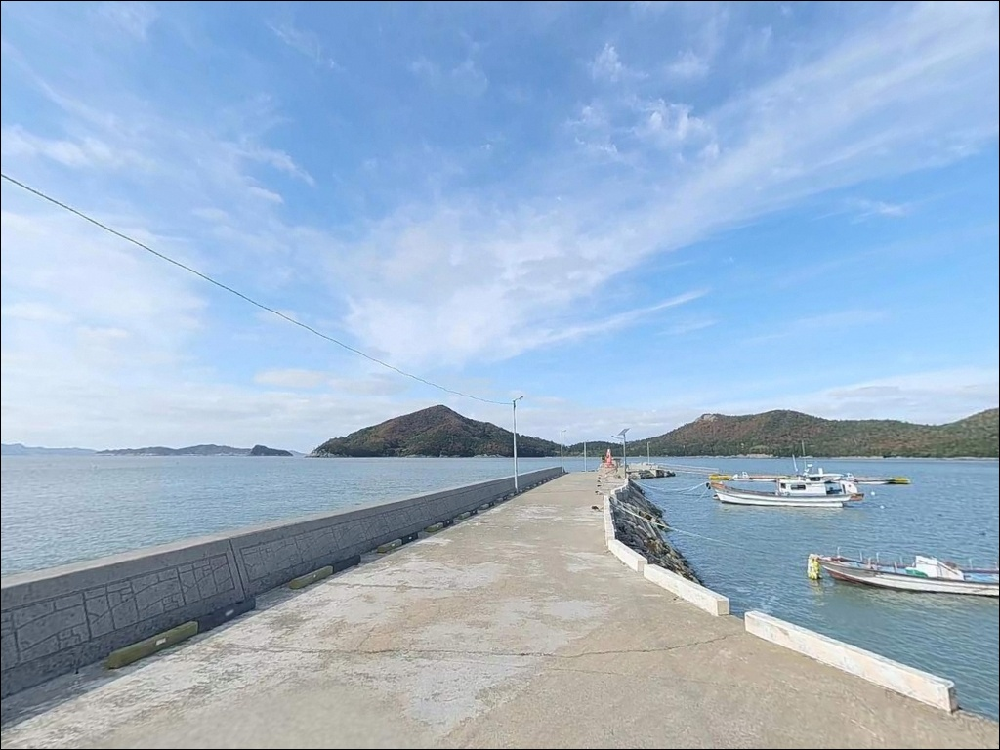
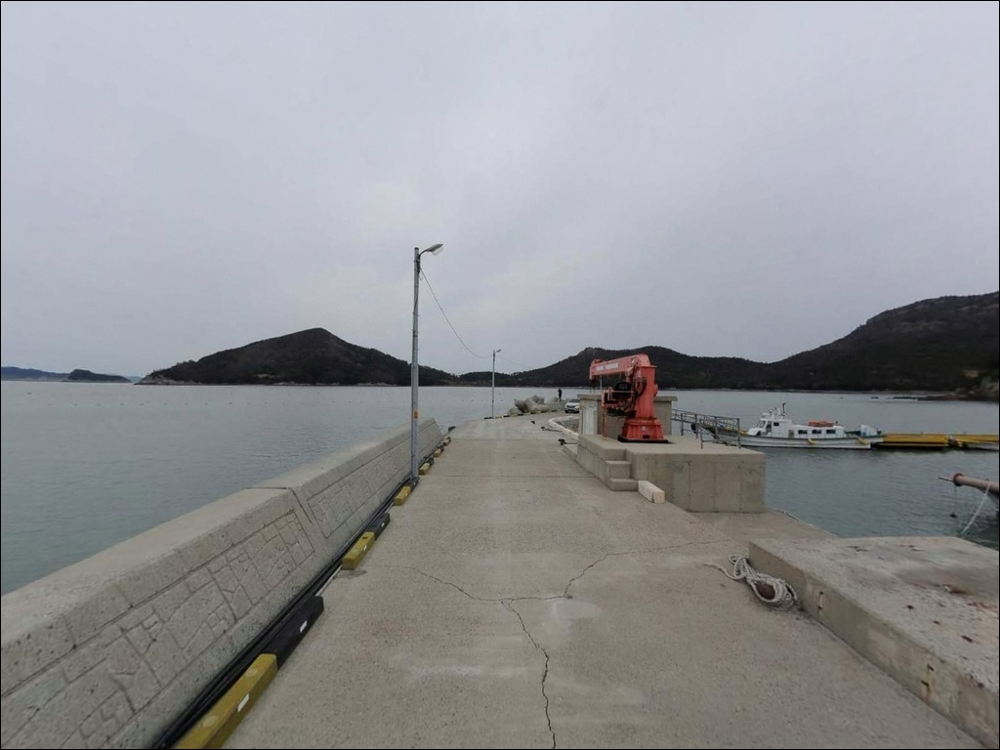
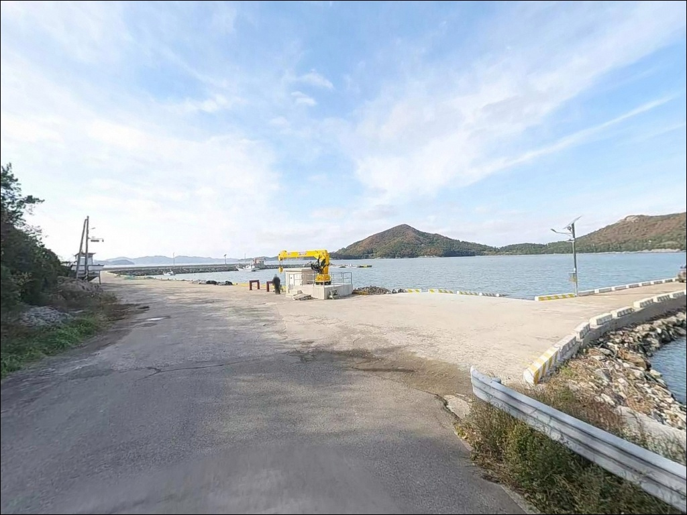

남동방파제(남동리선착장), 진도 전남 진도군 바다의 여운이 오래 남는 차박, 낚시 감성 포인트


포인트 안내
진도 방파제 낚시를 검색하면
서망항·팽목항 정보만 반복되고,
남동방파제(남동리선착장)는
관련 자료가 거의 없습니다.
지형 유형을 파악하지 않고
현장에 도착하면,
갯바위 낚시를 기대했다가
내만형 선착장 구조에
채비와 공략 방향 전체가
어긋나는 경우가 생깁니다.
포인트 유형 오판은
조과 저하로 직결됩니다.
내만형 구조에서
외해 갯바위 채비를 그대로 쓰면
조류 흐름과 수심 조건이 맞지 않아
입질 자체를 받기 어렵습니다.
이 글에서는
남동방파제(남동리선착장)의
실제 지형 구조와 수심 특성,
어울리는 낚시 방식,
시즌별 기대 어종,
편의시설과 대체 포인트까지
현장 기준으로 정리합니다.
이 글은 남동방파제(남동리선착장)의
지형 분석, 어울리는 낚시 방식,
시즌별 어종 패턴을 중심으로 정리합니다.

1. 내만형 지형 구조가
낚시 방식을 결정합니다
남동방파제(남동리선착장)란
전남 진도군 임회면 남동리 389-10에
위치한 소규모 어촌 선착장으로,
한복산·질매봉·천둥산으로 이어지는
산릉에 둘러싸인 만입부 안쪽의
내만형 지형에 자리한
포인트를 의미합니다.
외해 직격 노출이 적어
파도 영향이 작습니다.
내만형 구조이므로
파도 영향이 줄어드는 대신
조류 세기도 약한 편입니다.
만 입구 방향으로 갈수록
흐름이 형성되는 구간이 생기며,
선착장 끝단 외측에서
조류가 강해질 가능성이 있습니다.
선착장 직하 수심은
2~4m 내외로 추정됩니다.
외측 방향으로 갈수록
수심이 변화하는 구조이며,
바닥은 암반보다
모래·자갈 혼합 지형일
가능성이 높습니다.
조류가 형성되는 외측 구간은
원투낚시에 적합한 조건입니다.
같은 남동리 안에
서망항(국가어항)이 위치하며,
남동방파제(남동리선착장)과는
별개의 포인트입니다.
연안 낚시 여건이 제한적인
날에는 서망항을 거점으로
배낚시 출조를 병행하면
조과 안정성이 높아집니다.

2. 원투낚시·찌낚시·루어,
방식별 공략 전략
원투낚시는 선착장 끝단에서
외측 방향으로 캐스팅해
바닥층을 공략하는 방식이 기본입니다.
진도 남해 특성상
붕장어·숭어·도다리 계열을
기대할 수 있으며,
봉돌 30~40호 기준으로
조류 강도에 따라 조정합니다.
찌낚시는 조류가 형성되는
물때 시간대에 가장 효과적입니다.
찌스토퍼 세팅은
수심 3~5m를 기준으로 시작하고,
만 입구 방향으로
목줄이 자연스럽게 흘러가는
구간을 먼저 확인해야 합니다.
감성돔 시즌인 9~12월과
4~6월에 집중하면
입질 기회가 높아집니다.
라이트 루어는
선착장 주변 구조물과
발밑 여밭을 중심으로
볼락·전갱이를 노리고,
방파제 외측 조류 구간에서는
소형 미노우로
농어를 탐색합니다.
야간 조명 아래
지그헤드로 볼락을 공략하면
겨울~초봄 조과가 기대됩니다.
갈치 야간 낚시란
집어등으로 베이트피쉬를
수면으로 유인한 뒤
카드채비로 갈치를 공략하는
진도 남해안 대표 야간 낚시 방식입니다.
에깅은 가을 무늬오징어 시즌에
방파제 외측 수심층을
에기 폴링으로 탐색합니다.


3. 시즌별 기대 어종과
입질 패턴 변화
겨울부터 초봄까지는
볼락과 락피쉬 계열이
주요 대상어입니다.
수온이 낮을수록 대상어가
바닥층에 밀착하는 경향이 있어,
발밑 구멍치기 방식이
유효한 시기입니다.
야간 조명 주변을 소형 지그헤드로
탐색하는 패턴이 기본입니다.
봄과 가을에는
감성돔과 농어가
회유성으로 접근합니다.
수온 14도 이상이 형성되는
3월 후반부터 감성돔 입질이
시작될 가능성이 있으며,
9월 이후 수온이 낮아지는 시기에
다시 활성도가 높아집니다.
이 시기에 찌낚시와
루어 병행이 가장 효과적입니다.
여름에는 다양한 잡어와 함께
무늬오징어·갈치 시즌이 겹칩니다.
갈치는 야간 집어등 아래에서
카드채비로 공략하고,
무늬오징어는 방파제 외측
에기 폴링 액션으로 유도합니다.
서망항을 거점으로 하는
배낚시 출조에서는
조도·관매도 등
외해 섬 포인트로 이동해
감성돔·돌돔·방어·부시리·참돔·갈치를
대상으로 낚시가 가능합니다.
연안 낚시 여건이 좋지 않은 날에
배낚시 출조를 병행하면
원정 출조 효율이 높아집니다.

4. 진입로와 주차 운용
기준 정보
임회면 내 지방도에서
남동리 마을 방향으로 갈라지는
소로를 이용해 진입합니다.
마을 안쪽 도로는
소형차 기준 통행 가능한 수준으로
추정되며, 대형 차량은
회차 공간이 제한될 가능성이 있습니다.
서망항·팽목항 일대에는
넓은 포장 주차장이 조성되어 있어
낚시 목적 방문자도 활용할 수 있습니다.
선착장 앞 단기 정차 후
장비를 하역하고,
이후 팽목항 공식 주차장으로
차량을 이동하는 방식이
현실적인 운용입니다.
어선 이착안과
작업 차량 동선이 상시 운용되는
항만 구조이므로,
물양장 구간과 선착장 진입부는
어민 작업을 최우선으로 배려해야 합니다.
캐스팅 방향은
어선 항로 바깥쪽으로 설정합니다.

5. 편의시설과
보급 정보
공중화장실은
서망항 내부에
"서망항1" 화장실(서망항길 70-15)이
상시 개방 운영됩니다.
진도군 임회면사무소 관리 시설로,
남동방파제(남동리선착장)에서
차량으로 이용 가능한
거리에 위치합니다.
편의점은
진도항길 89 일대에
세븐일레븐 진도팽목하늘점이
운영 중입니다.
출조 전 식료품·음료·얼음 등
기본 보급품을 사전에 준비하면
현장 도착 후 낚시에
바로 집중할 수 있습니다.
서망항 인근에는
해산물 식당과 작은 상점이
일부 운영됩니다.
팽목항 여객터미널 대합실은
장거리 출조 시
기본 쉼터로 활용 가능하며,
넓은 주차 공간도
함께 이용할 수 있습니다.


6. 대체 포인트와
배낚시 거점 활용법
남동방파제(남동리선착장) 여건이
맞지 않을 때
가장 먼저 고려할 대안은
서망항 북측 방파제입니다.
같은 권역 안에서
방파제 길이가 더 길고,
외항 쪽 조류 구간을
이용할 수 있습니다.
감성돔·우럭·붕장어 등
어종 구성도 유사합니다.
팽목항 제방은
루어 볼락·농어를 노리기에
적합한 구간으로 알려져 있습니다.
라이트 루어 위주 야간 출조에
주차 공간 접근성이 높아
현실적인 대체지입니다.
서망 갯바위는
주차 지점에서 도보로 접근하는
구조입니다.
여밭 지형을 활용한
락피쉬·원투낚시를 계획할 때
플랜B로 활용할 수 있습니다.
서망항 선상낚시란
남동리에 위치한 국가어항 서망항을
거점으로 조도·관매도 등
외해 섬 포인트까지 이동하는
선상 출조 방식입니다.
방어·부시리·참돔·갈치를 대상으로
낚싯배가 운항하며,
연안 여건이 제한적인 날에
가장 효과적인 대안입니다.
사전 예약이 필수입니다.

7. 출조 전 반드시 확인해야 할
안전 수칙과 규정
남동방파제(남동리선착장) 일대는
다도해해상국립공원 구역에
포함되어 있습니다.
지정된 야영장 외 구역에서의
야영·취사·불 피우기는
원칙적으로 금지됩니다.
낚시 위주 단기 출조로
운용 방식을 설정하고,
차박 계획이 있다면
국립공원 관리 규정을
사전에 확인해야 합니다.
방파제 끝단과 선착장 외측 구간은
내항보다 파도와 바람의
영향이 크게 나타납니다.
풍랑주의보 발효 시에는
방파제 진입을 자제해야 합니다.
출조 전 기상청 파고·풍속 예보를
반드시 확인하는 것이 기본입니다.
구명조끼는
방파제·선착장 낚시 시
반드시 착용해야 하는
기본 안전 장비입니다.
갯바위로 이동하는 경우
미끄럼 방지 장화와 구명조끼를
동시에 착용하고,
단독 이동 구간을
최소화해야 합니다.
소규모 어촌 마을 선착장이므로
어선 이착안과 어민 작업 시간대를
항상 우선 배려해야 합니다.
발생한 쓰레기는
전량 수거해 반출하고,
야간 소음도 주의합니다.
연안 양식장 라인 안쪽으로
채비가 들어가지 않도록
캐스팅 방향을 설정합니다.

지형을 알면
남동방파제의 조과가
달라집니다
포인트 안내
남동방파제(남동리선착장)는
내만형 선착장이라는 지형 특성을
먼저 이해해야 조과를
기대할 수 있는 포인트입니다.
원투낚시와 라이트 루어가
기본 공략 방식이며,
시즌에 따라 감성돔·볼락·농어·갈치까지
다양한 어종을 노릴 수 있습니다.
인접 서망항을 거점으로
배낚시 출조를 병행하면
외해 섬 포인트까지
접근 범위가 넓어집니다.
연안 여건이 좋지 않은 날에는
서망항 북측 방파제·팽목항 제방을
대체 포인트로 활용하면
출조 효율이 높아집니다.
다도해해상국립공원 구역 규정 확인,
어민 작업 배려,
기상 예보 점검,
이 세 가지를 출조 전에
반드시 갖추면
이 포인트에서의 낚시 품질이
안정됩니다.